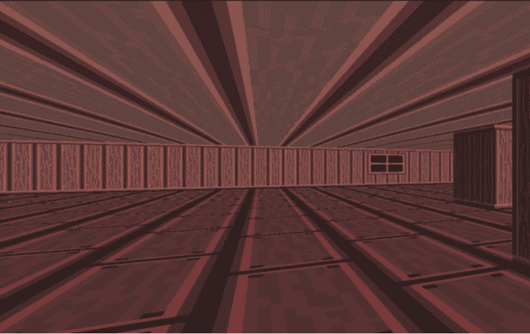
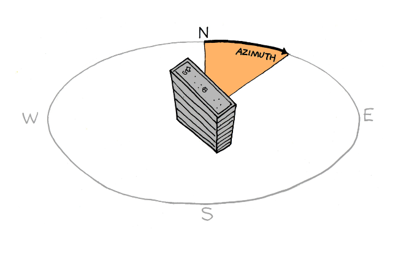
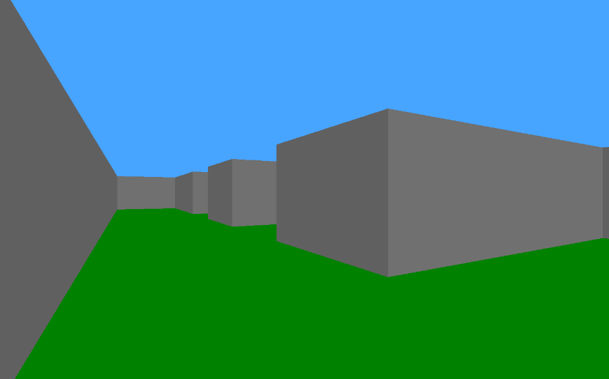

Key Features
Walls Rendering
in the Game, windows will be created using SDL2 and raycasting is employed to render walls. This forms the backbone of the 3D rendering process, simulating depth and perspective within a 2D environment.
Wall Orientation
Differentiate wall colors based on their orientation (NORTH, SOUTH, EAST, WEST). This helps in distinguishing the direction of walls, enhancing spatial awareness and navigation within the rendered environment.
Camera Rotation
Implement smooth camera rotation using keyboard or mouse inputs, allowing players to look around the environment. This feature mimics the experience of first-person perspective in 3D games.
Player Movement
Enable player movement using standard gaming controls (W, A, S, D keys). This feature supports forward, backward, and sideways movement, providing a dynamic and interactive experience.


Collision Detection
Prevent the player from walking through walls with robust collision detection. The player can slide along walls, ensuring realistic movement and interaction within the game environment.